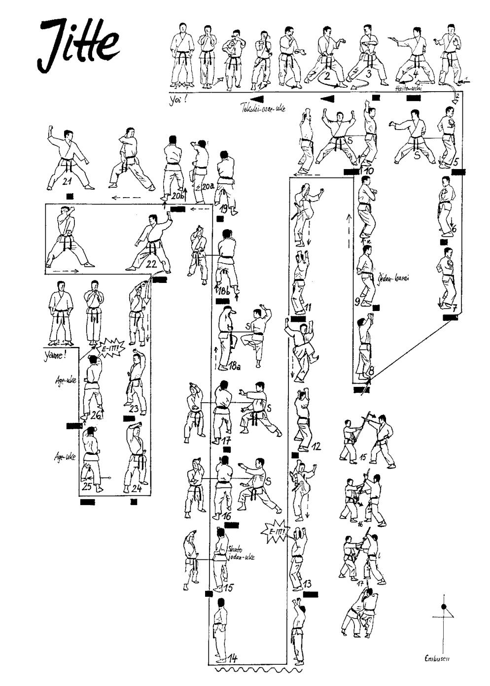

Jutte o Jitte

- Yoi andando in Eisoku Dachi con le ginocchia leggermente piegate, braccia piegate, pugni all'altezza del mento, il palmo sinistro contiene il pugno destro e il pollice sinistro copre il cavo della destra.
- Arretro con la gamba sinistra e vado in Zenkutsu Dachi destro, eseguo contemporaneamente Tekubi Kake Uke destro.
- Avanzo a 45° in Zenkutsu Dachi, eseguendo Hidari Teisho Uke Chudan e Migi Teisho Uke Gedan.
- Osae Uke sinistro colpendo l’incavo del gomito destro.
- Richiamo la gamba destra e la riapro in Kiba Dachi eseguendo Yoko Haito Uchi Chudan destro.
- Unisco la gamba sinistra e ruotando in senso antiorario di 90° allargo la gamba destra in Kiba Dachi ed eseguo Teisho Uchi destro.
- Avanzo in Kiba Dachi per due volte eseguendo Teisho Uchi.
- Eseguo uno spostamento laterale verso sinistra incrociando la gamba destra e incrocio davanti al viso gli avambracci, riallargando la sinistra in Kiba Dachi eseguo doppio Yoko Gedan Barai.
- Eseguo uno altro spostamento laterale verso sinistra questa volta con “piede scaccia piede” (Suri Ashi) incrociando avanti al viso gli avambracci e riallargando rapidamente la gamba sinistra in Kiba Dachi eseguo doppio Yoko Ude Uke Jodan.
- Tenendo ferma la posizione delle braccia, eseguo Mikazuki Geri sinistro a 180° verso destra e scendendo in Kiba Dachi sinistro sfruttando la rotazione del busto eseguo Soto Uke Jodan sinistro, il braccio destro rimane alto.
- Avanzo ripetendo la sequenza Mikazuki Geri, Soto Uke Jodan a destra.
- Avanzo ripetendo la sequenza Mikazuki Geri, Soto Uke Jodan a sinistra. Kiai.
- Richiamando la gamba destra in Hachiji Dachi eseguo doppio Yoko Gedan Barai.
- Ruoto in senso orario di 90° in Migi Zenkutsu Dachi ed eseguo Migi Shuto Uchi Jodan caricandolo sotto il braccio sinistro.
- Sposto il braccio destro ad altezza del plesso solare e porto la mano sinistra frontale, stessa distanza di Yama Tzuki, entrambe le mani sono aperte a “C” come per afferrare un bastone verticale.
- Entrambe le mani ruotano in senso orario.
- Richiamo il ginocchio sinistro a proteggere l’area pelvica portando entrambe le braccia sul lato destro del busto mantenendone la distanza e invertendo le posizioni verticalmente.
- Scendo in Zenkutsu Dachi sinistro eseguendo la sequenza precedentemente descritta in maniera speculare.
- Eseguo per la terza volta la sequenza in Zenkutsu Dachi destro.
- Rotazione in senso antiorario di 90° andando in Hidari Kokutzu Dachi ed eseguo contemporaneamente Jodan Uchi Uke destro Gedan Barai sinistro.
- Faccio perno sui talloni e ruoto di 180° in Migi Kokutzu Dachi ed eseguo contemporaneamente Jodan Uchi Uke sinistro Gedan Barai destro.
- Sposto la gamba sinistra di 90° andando in Hidari Zenkutsu Dachi ed eseguo Age Uke sinistro.
- Avanzo in Migi Zenkutsu Dachi ed eseguo Age Uke destro.
- Mawatte eseguendo Age Uke sinistro.
- Avanzo in Migi Zenkutsu Dachi ed eseguo Age Uke destro.
- Richiamando la gamba sinistra ruoto di 180° tornando in Yoi.
- Yame!